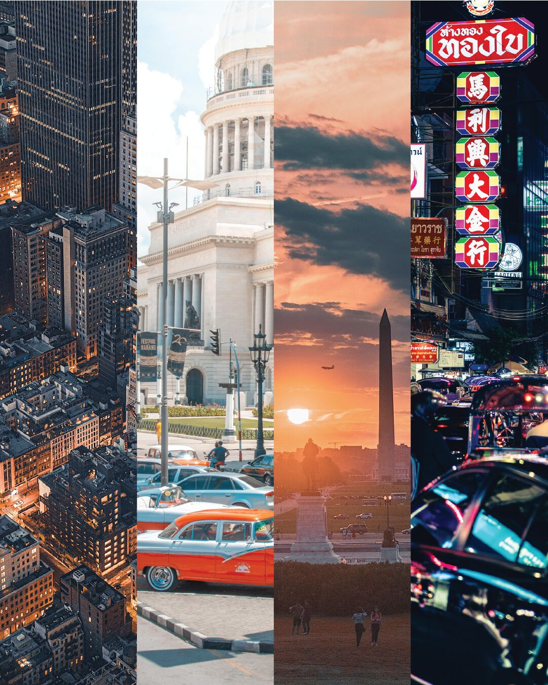
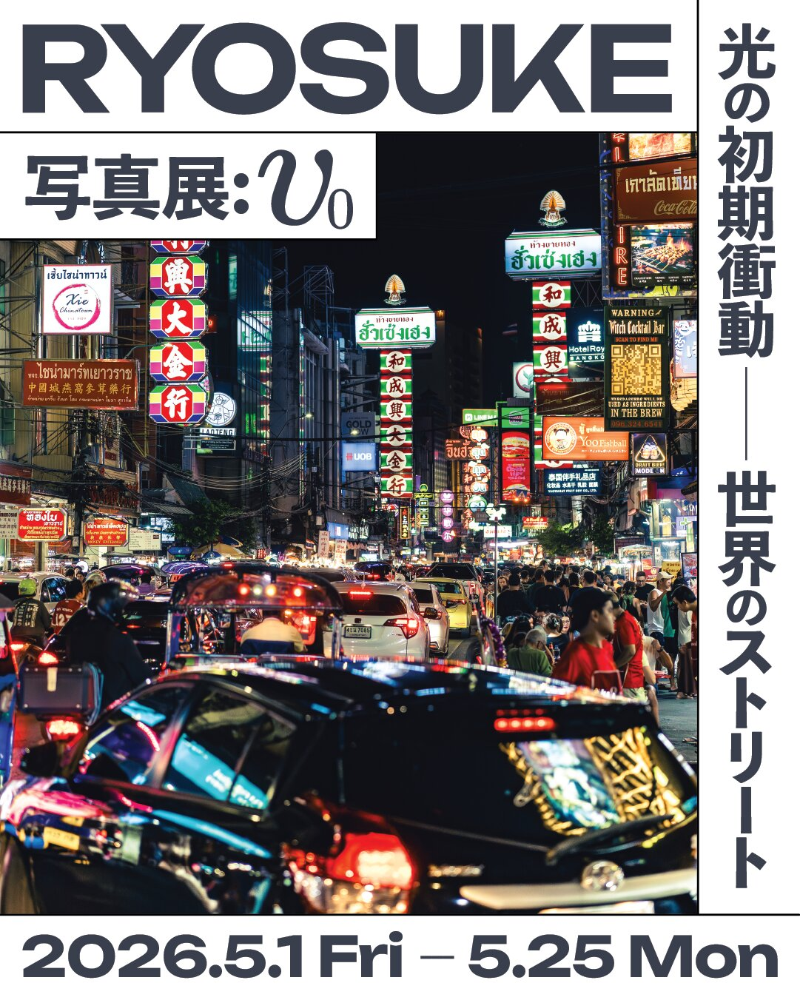

RYOSUKE 写真展: v0
光の初期衝動—世界のストリート
会期
2026年5月1日（金）〜 5月25日（月）
会場
cafebar&art KEEP ／
Instagram @keep_cafebar.art
住所
名古屋市中区新栄1-3-2 エムテック東新町ビル3B ／
Google マップで開く
営業時間
金: 10:00~深夜 / 土日月: 10:00~18:00
※店舗営業時間に準じます
アクセス
地下鉄東山線・新栄町駅から徒歩10分
入場
無料・ワンドリンクオーダー制
作家
Ryosuke
LINEで最新情報を受け取る
Ryosuke Photo Exhibition: v0
Dates
May 1 (Fri) – May 25 (Mon), 2026
Venue
cafebar&art KEEP ／
Instagram @keep_cafebar.art
Address
3B M-Tec Higashi-Shinmachi Bldg., 1-3-2 Shinsakae, Naka-ku, Nagoya ／
Open in Google Maps
Hours
Fri 10:00–late / Sat–Mon 10:00–18:00 (subject to venue's business hours)
Access
10 min walk from Shinsakae-machi Station (Higashiyama Line)
Admission
Free · One drink order required
Artist
Ryosuke
Get updates on LINE
